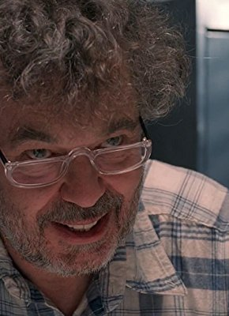

Alternativ: Bag of Bones (Englischer Titel)

 IMDB-Wertung: 5.8 / 10
IMDB-Wertung: 5.8 / 10  Metascore: 0
Metascore: 0 
Der Bestseller-Autor Mike Noonan kommt nicht über den Tod seiner geliebten Ehefrau Jo hinweg. Um seine Schreibblockade zu lösen, zieht er in das kleine Haus am See, wo er mit Jo schon viele glückliche Stunden verbrachte. Dort lernt er Mattie kennen, eine attraktive Frau und ebenfalls Witwe. Doch obwohl seine Schreibkunst wieder zurückkehrt, wird Mike von immer heftigeren Albträumen und Visionen geplagt. Scheinbar hat seine tote Frau ihm noch etwas mitzuteilen...
verschieben zu "X:\Person\Stephen King"
Jahr: 2011
Dauer: 76 Minuten
FSK: 16
Land: USA Studio: A&E Television NetworksTonspuren:
Untertitel:
Auflösung: 1080p (1920x1080) Größe: 2385 MB
Genre: Thriller, Horror, Drama, Mystery, TV-Serie
Regisseur: Mick Garris
Drehbuch: Stephen King, Matt Venne
Soundtrack:
Darsteller:
 Pierce Brosnan als Mike Noonan, 2 episodes, 2011
Pierce Brosnan als Mike Noonan, 2 episodes, 2011- Melissa George als Mattie Devore, 2 episodes, 2011
 Annabeth Gish als Jo Noonan, 2 episodes, 2011
Annabeth Gish als Jo Noonan, 2 episodes, 2011- Anika Noni Rose als Sara Tidwell, 2 episodes, 2011
 Matt Frewer als Sid Noonan, 2 episodes, 2011
Matt Frewer als Sid Noonan, 2 episodes, 2011- Jason Priestley als Marty, 2 episodes, 2011
- Caitlin Carmichael als Kyra Devore, 2 episodes, 2011
 Peter MacNeill als Bill Dean, 2 episodes, 2011
Peter MacNeill als Bill Dean, 2 episodes, 2011 William Schallert als Max Devore, 2 episodes, 2011
William Schallert als Max Devore, 2 episodes, 2011- Deborah Grover als Rogette Whitmore, 2 episodes, 2011
- Jefferson Mappin als Buddy Jellison, 2 episodes, 2011
- David Sheftell als Young Max Devore, 2 episodes, 2011
-  Leslie Carlson als Edgar White, 1 episode, 2011
 Julian Richings als Elmer Durgin, 1 episode, 2011
Julian Richings als Elmer Durgin, 1 episode, 2011- Matt Tolton als Young Buddy Jellison, 1 episode, 2011
- Deborah Allen als Brenda Meserve, 2 episodes, 2011
- Cienna Prendergast als Kisha Tidwell, 2 episodes, 2011
- Gary Levert als Deputy George Footman, 2 episodes, 2011
- Shane Anderson als Lance Devore, 2 episodes, 2011
- Joel Freckelton als Harold Noonan, 2 episodes, 2011
- Gregory Penney als Young Normal Jellison, 2 episodes, 2011
- Geordie Brown als Young Edgar White, 2 episodes, 2011
- Aja Deeble als Dean Daughter, 2 episodes, 2011
- Fiona Forsythe als Jellison Daughter, 2 episodes, 2011
- Glenn Lefchak als John Storrow, 1 episode, 2011
- James Swansburg als Fred Dean, 1 episode, 2011
- Charlie Rhindress als Normal Jellison, 1 episode, 2011
- Geneviève Steele als Audrey Michaels, 1 episode, 2011
- David Hughes als Royce Merrill, 1 episode, 2011
- Michael Hampson als Young Fred Dean, 1 episode, 2011
- Peter White als Superfan, 1 episode, 2011
- Michael McPhee als Waiter, 1 episode, 2011
- Aaron Cameron als Fair Goer (uncredited), 2 episodes, 2011
- Terry Lawlor als Paramedic (uncredited), 1 episode, 2011
Datei: X:\2011(N-Z)\Stephen Kings Bag of Bones (2011, FSK16, 1920x1080) Teil 1.mkv seit 25.04.2019
Festplatte: HD 2011(G-Z)
 Es gibt insgesamt 132 Filme in der Gruppe '2011(N-Z)'
Es gibt insgesamt 132 Filme in der Gruppe '2011(N-Z)'
")